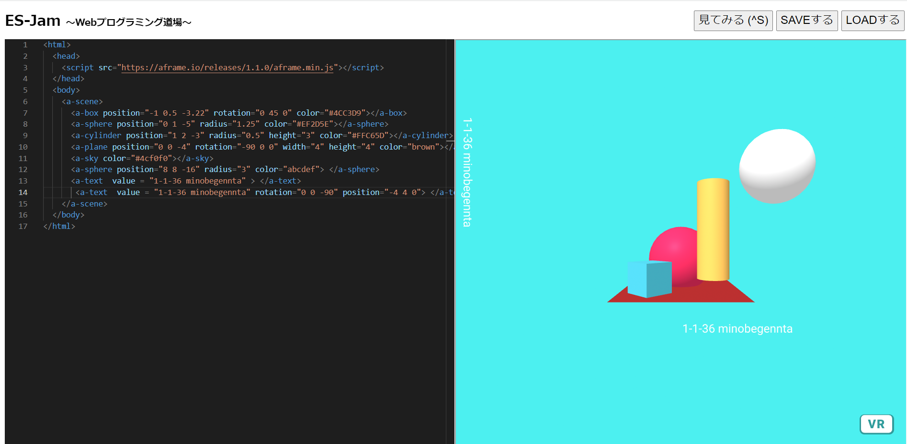
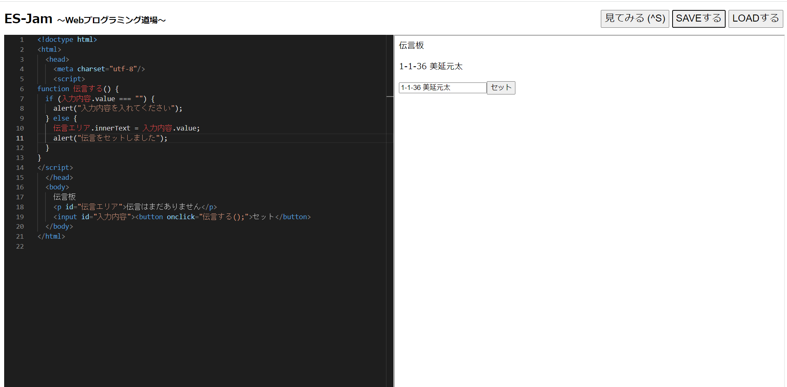

第3週目
3-1 JavaScript体験：VR空間を作る

VR空間
1.内容
Webプログラミング道場とIntroduction-A-Frameを用いてWeb上にVR空間を作り出す。また、オリジナルとしTextを新たに追加し、
クラス、番号、名前をVR空間に配置した。
2.感想
UnityやBlenderなどを使ったことあったけどプログラム組んでするといったことはなかったのでとても楽しかった。
3-2 JavaScript体験：伝言プログラムを作る

伝言板
1.内容
Webプログラミング道場を使ってWeb上に伝言板を作成した。使用した言語はHTML,JavaScript
2.感想
思ったより簡単で1回でエラーなしで完成したのはうれしかった。
3-3 JavaScriptプログラムの３次元空間の体験
1.内容
Introduction-A-Frameで作られた空間をVRゴーグルを使って実際に入り込む。
2.感想
前期の概論であの空間を紹介されていて気になっていたから、この機会に実体験することが出来て楽しかった。
また、今回はできることが限られていたのでもっと自由度を高めてみたい。